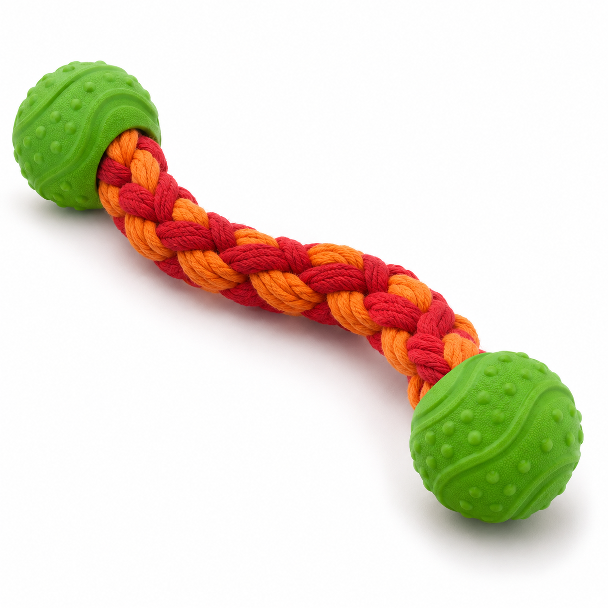
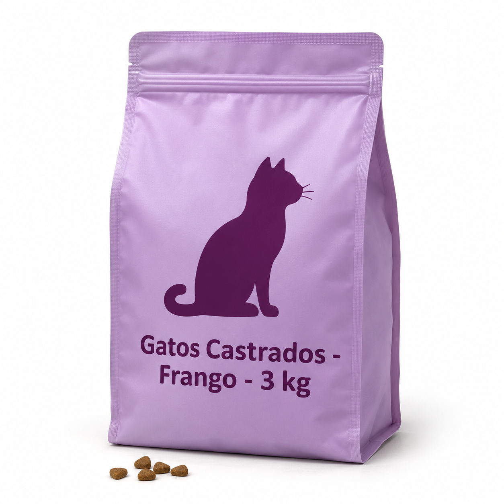
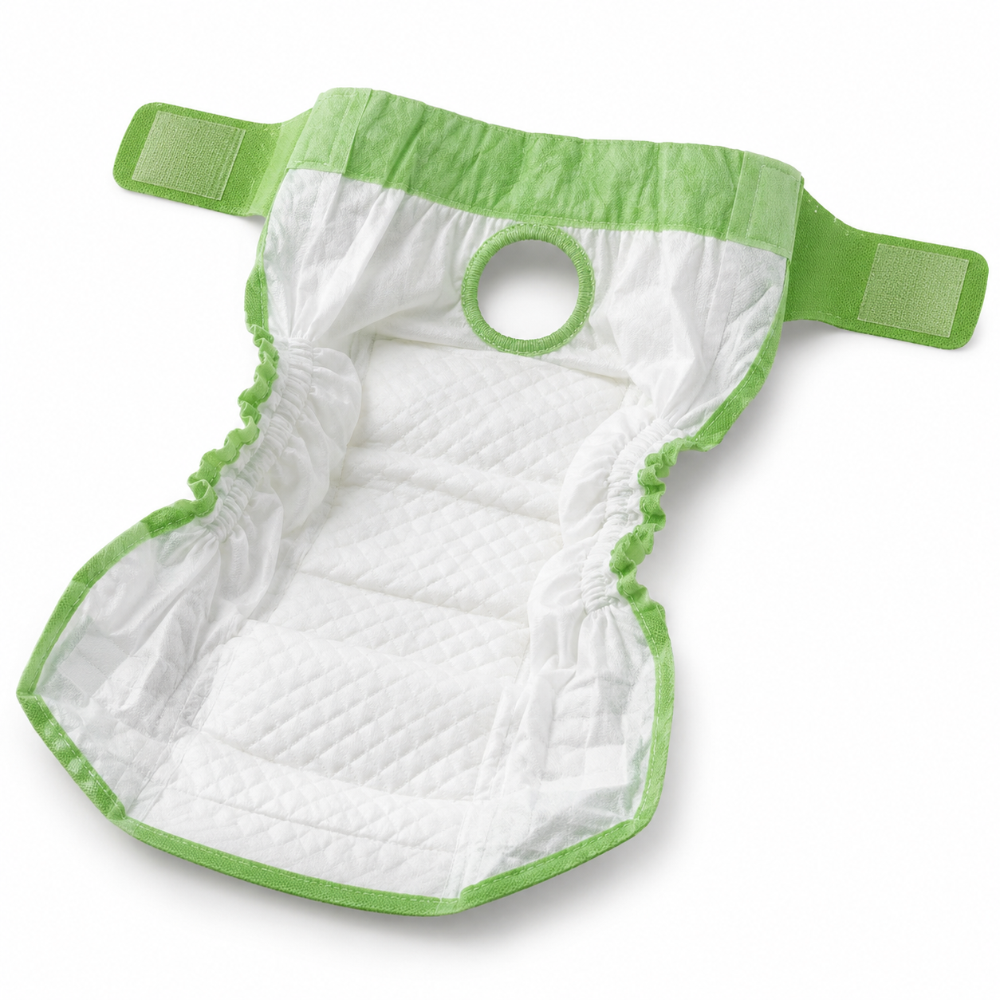

Cama pet redonda

Cama macia em formato de ninho, com bordas altas que dão sensação de aconchego. Tecido lavável e base antiderrapante. Diâmetro de 60 cm, indicada para cães e gatos de até 15 kg.
Valor: R$ 129,90
PetPocket Pet Shop
Tudo o que seu pet precisa em um só lugar.
Atendimento de segunda a sábado, das 8h às 18h | Telefone e WhatsApp: (51) 3320-3500
Confira nossos produtos disponíveis. Para comprar, clique em Encomendar por WhatsApp
Ir para: Acessórios | Rações não perecíveis | Higiene e Limpeza
Camas, brinquedos, roupas e outros itens para o conforto e a diversão do seu pet.
Cama macia em formato de ninho, com bordas altas que dão sensação de aconchego. Tecido lavável e base antiderrapante. Diâmetro de 60 cm, indicada para cães e gatos de até 15 kg.
Valor: R$ 129,90

Brinquedo de corda de algodão trançado com bolinhas de borracha nas pontas. Ajuda na limpeza dos dentes e gasta a energia do cão nas brincadeiras de cabo de guerra. Comprimento de 35 cm.
Valor: R$ 24,90
Rações secas completas e balanceadas, com validade longa na embalagem fechada.

Ração completa para cães adultos de porte pequeno e médio, com proteína de carne, vitaminas e ômegas 3 e 6. Embalagem com fecho zip que mantém os grãos crocantes. Validade de 12 meses fechada.
Valor: R$ 159,90

Fórmula com baixo teor de gordura, desenvolvida para gatos adultos castrados. Grãos pequenos, fáceis de mastigar. Validade de 12 meses fechada.
Valor: R$ 79,90
Tapetes higiênicos, fraldas e outros produtos para manter o pet e a casa sempre limpos.

Tapete descartável de 60 × 60 cm com gel superabsorvente que reduz odores e camada impermeável que protege o piso. Ideal para filhotes e cães de apartamento.
Valor: R$ 69,90

Fralda com abertura para a cauda e fitas ajustáveis. Indicada para fêmeas no cio, cães idosos ou em recuperação. Para cães de 7 a 15 kg.
Valor: R$ 44,90